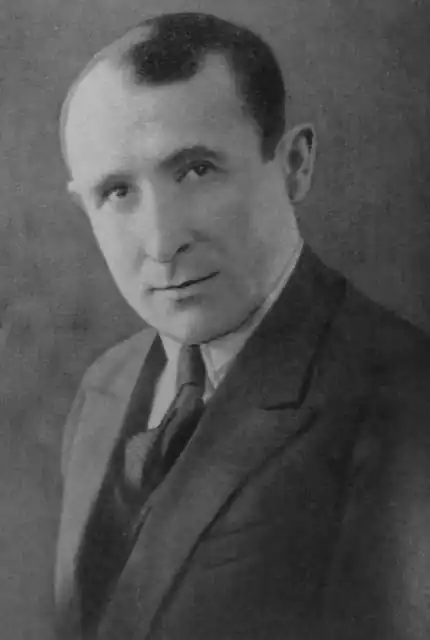
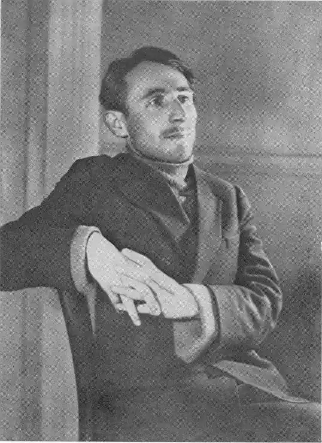

Симон Іванович Чіковані (груз. სიმონ ჩიქოვანი; 27 грудня 1902 (9 січня 1903) — 24 квітня 1966) — грузинський радянський поет. Лауреат Сталінської премії першого ступеня (1941). Член ВКП (б) з 1941 року.
Народився Симон Іванович 8 січня 1903 року в селищі Наесаково в Західній Грузії, недалеко від річки Ріоні, в родині сільського трудівника. У батька був прекрасний слух, він чудово співав. Особливо вдавалися йому східні баяти. Батько пристрасно любив поезію, читав напам'ять цілі сторінки з Руставелі і Гурамішвілі, був гарячим шанувальником Іллі Чавчавадзе і Акакія Церетелі. Мати померла при пологах. Після годувальниці Симона виховувала бабуся , також велика любителька книг. Вона часто змагалася з батьком в читанні на пам'ять строф Руставелі та інших віршів. Рід Чіковані був відомий сімейними поетами — багато хто з предків і родичів любили обмінюватися віршованими посланнями. Певно тому тяга до поезії у Симона зародилася ще в дитинстві, в рідній сім'ї.
Батько — любитель віршів і природи — мріяв побачити свого єдиного сина гірським інженером, тому Симона віддали в кутаїське реальне училище. Кутаїсі в ті роки був справжнім центром культурного життя Грузії. Серед молоді саме гімназисти були завсідниками літературних читань і суперечок. Симон почав писати вірші і брав участь в створенні рукописних журналів, що випускалися учнями. У 1918 році помер батько. Довелося розпочати цілком самостійне трудове життя. Влітку працював в селі, обробляв землю, готував учнів і сам продовжував вчитися. Всю свою сімейну хроніку і юнацькі враження пізніше висловив в своїй ліриці. У 1922 році закінчив реальне училище і переїхав у Тбілісі, вступив до університету і почав працювати в політвідділі грузинських частин Червоної Армії. Там йому доводилося займатися і редакційної роботою —становив і редагував різні хрестоматії і брошури для червоноармійців. Коли ж в 1924 році за рішенням ЦК КП Грузії став виходити щомісячний літературний орган грузинських письменників — журнал "Мнатобі", почав там працювати літературним співробітником. Друкуватися почав з 1924 року. На початку своєї поетичної роботи обмежувався переважно сферою інтимної і любовної лірики. У творчості вів пошуки шляху, який дозволив би найбільш яскраво і чітко втілити тему нового життя країни. Багато подорожував Грузією щоб на власні очі побачити, як нове життя увійшло в цю далечінь, дісталося до казкових вершин. Отримані тоді враження народили такі вірші, як "Комсомол в Ушгулі", "Вечір застає в Хахмат", "Хевсурська корона", "Сванська колискова", "Лист з гір" та інші. Симон Іванович знайшов свій творчий шлях. Якщо 30-і роки були для поета роками своєрідної творчої зрілості і поетичного змужніння, то найбільш врожайними і творчо значними виявилися для нього 40-і роки. У першій половині 1941 року була написана особливо важлива для поета книга — "Я з дому вийшов на дорогу батьківщини", в якій мотиви особистої і сімейної хроніки були узагальнені і підняті до соціального звучання, тема "дому" тісно переплелася з темою батьківщини. У роки Великої Вітчизняної війни були написано рід віршів, що згодом були об'єднані в збірнику "Гамарджвеба" ( "Перемога"). Не відриваючись від бойової лірики, поет розпочав роботу над найбільшим своїм твором — поемою "Пісня про Давида Гурамішвілі", яка найтіснішим чином була пов'язана з думками і переживаннями військових років і підводила разом з тим підсумок роздумам про драматичну історію батьківщини. За чверть століття поетом написано сімнадцять ліричних збірок і одна поема — "Пісня про Давида Гурамішвілі". Багато Симон Іванович працював і над перекладами. Зі слів самого поета для нього особливо дорогими є переклади "Слова о полку Ігоревім" і лірики Тараса Шевченка. Протягом останніх двадцяти років поряд з поетичною роботою Симон Іванович займався також редакційно-організаторською та дослідницькою діяльністю. З 1954 по 1960рр.він головний редактор журналу Мнатобі. Автор есе про світову літературу, перекладач російської та української поезії. Неодноразово обирався депутатом Верховних Рад СРСР і Грузинської РСР. Був головою Спілки письменників Грузії. За свою літературну роботу нагороджений орденом Леніна, двома орденами Трудового Червоного Прапора і медалями Радянського Союзу. У 1947 році за поему "Пісня про Давида Гурамішвілі" і вірші "Картлійського вечора", "Хто сказав" і "Свято Перемоги" поету була присуджена Сталінська премія 1-го ступеню. Помер Симон Іванович Чіковані 24 квітня 1966 року. Похований в Тбілісі в пантеоні Мтацмінда. Олена Радченко